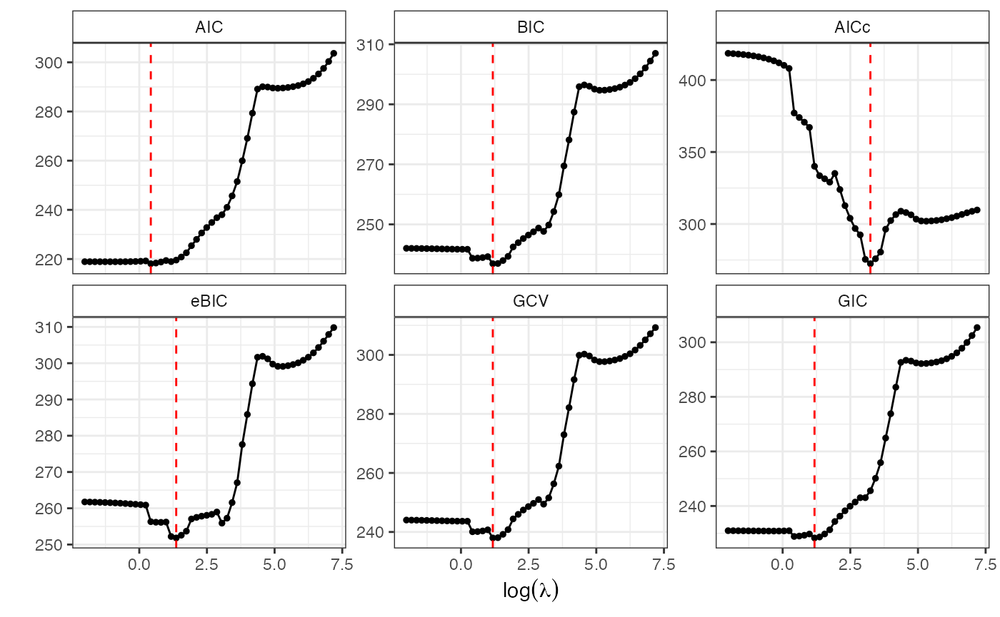
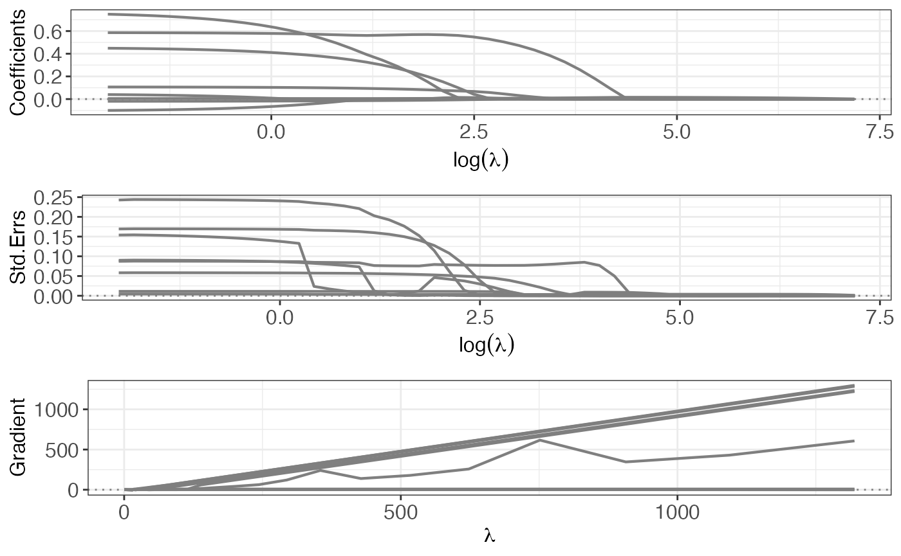
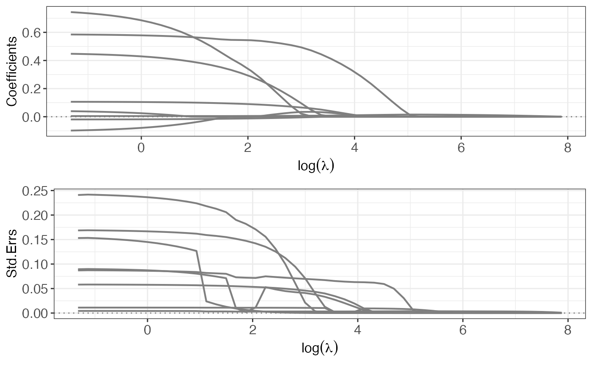
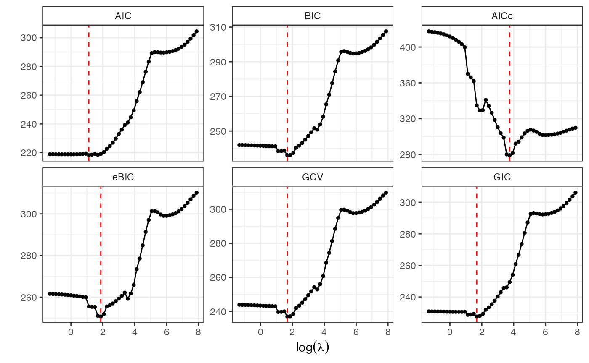

An Introduction to islasso
Gianluca Sottile
Giovanna Cilluffo
Vito M.R. Muggeo
August 01, 2025
islasso-intro.RmdAbstract
In this short note we present and briefly discuss the R package islasso dealing with regression models having a large number of covariates. Estimation is carried out by penalizing the coefficients via a quasi-lasso penalty, wherein the nonsmooth lasso penalty is replaced by its smooth counterpart determined iteratively by data according to the induced smoothing idea. The package includes functions to estimate the model and to test for linear hypothesis on linear combinations of relevant coefficients. We illustrate R code throughout a worked example, by avoiding intentionally to report details and extended bibliography.
Introduction
Let \mathbf{y} = \mathbf{X}\beta + \mathbf{\epsilon} be the linear model of interest with usual zero-means and homoscedastic errors. As usual, \mathbf{y} = (y_1,\ldots,y_n)^T is the response vector, \mathbf{X} is the n \times p design matrix (having p quite large) with regression coefficients \mathbf{\beta}. When interest lies in selecting the non-noise covariates and estimating the relevant effect, one assumes the lasso penalized objective function (Tibshirani, 1996), \frac{1}{2}||\mathbf{y}-\mathbf{X}\mathbf{\beta}||_2^2+\lambda||\mathbf{\beta}||_1
The R functions
The main function of the package are islasso() where the user supplies the model formula as in the usual lm or glm functions, i.e.
islasso(formula, family = gaussian, lambda, alpha = 1, data, weights, subset,
offset, unpenalized, contrasts = NULL, control = is.control())and islasso.path used to fit the regularization path via the induced smoothed lasso framework, i.e.
islasso.path(formula, family = gaussian, lambda = NULL, nlambda = 100,
lambda.min.ratio = ifelse(nobs < nvars, 1E-3, 1E-05), alpha = 1,
data, weights, subset, offset, unpenalized, contrasts = NULL, control = is.control())family accepts specification of family and link function as in Table 1, lambda is the tuning parameter, alpha is elastic-net mixing parameter, nlambda is the number of lambda values, lambda.min.ratio is the smallest value for lambda (as a fraction of lambda.max), and unpenalized allows to indicate covariates with unpenalized coefficients.
Table 1. Families and link functions allowed in islasso
| family | link |
|---|---|
| gaussian | identity |
| binomial | logit, probit |
| poisson | log |
| gamma | identity, log, inverse |
The fitter functions are and which reads as
islasso.fit(X, y, family = gaussian(), lambda, alpha = 1, intercept = FALSE,
weights = NULL, offset = NULL, unpenalized = NULL, control = is.control()) and
islasso.path.fit(X, y, family = gaussian(), lambda, nlambda, lambda.min.ratio,
alpha = 1, intercept = FALSE, weights = NULL, offset = NULL,
unpenalized = NULL, control = is.control()) whose actually implements the estimating algorithm as described in the paper. The lambda argument in islasso.fit and islasso specifies the positive tuning parameter in the penalized objective. Any non-negative value can be provided, but if missing, it is computed via K-fold cross validation by the function cv.glmnet() from package glmnet. The number of folds being used can be specified via the argument nfolds of the auxiliary function is.control(). The lambda argument in islasso.path.fit and islasso.path specifies the sequence of positive tuning parameters, user supplied or automatically computed based on nlambda and lambda.min.ratio.
A worked example: the Diabetes data set
We use the well-known diabetes dataset available in the lars package. The data refer to n = 442 patients enrolled to investigate a measure of disease progression one year after the baseline. There are ten covariates, (age, sex, bmi (body mass index), map (average blood pressure) and several blood serum measurements (tc, ldl, hdl, tch, ltg, glu). The matrix x2 in the dataframe also includes second-order terms, namely first-order interactions between covariates, and quadratic terms for the continuous variables.
To select the important terms in the regression equation we could simply apply the lasso using the R package glmnet
library(islasso)
#> Loading required package: glmnet
#> Loading required package: Matrix
#> Loaded glmnet 4.1-10
#>
#> +----------------------------------------------+
#> | Welcome to *islasso* |
#> | The Induced Smoothed Lasso for R |
#> | Hypothesis testing in high-dimensional data |
#> +----------------------------------------------+
#>
data("Prostate", package = "islasso")
x <- model.matrix(lpsa ~ ., data = Prostate)[, -1]
y <- Prostate$lpsa
a1 <- cv.glmnet(x, y, family = "gaussian")
n <- nrow(Prostate)
a1$lambda.min * n
#> [1] 3.797398
b <- drop(coef(a1, "lambda.min", exact = TRUE))
length(b[b != 0])
#> [1] 7Ten-fold cross validation “selects” \lambda= 3.797. corresponding to 7 non null coefficients
names(b[b != 0])
#> [1] "(Intercept)" "lcavol" "lweight" "age" "lbph"
#> [6] "svi" "pgg45"The last three estimates are
tail(b[b != 0], n = 3)
#> lbph svi pgg45
#> 0.069318034 0.592326060 0.002184294A reasonable question is if all the “selected” coefficients are significant in the model. Unfortunately lasso regression does not return standard errors due to nonsmoothness of objective, and some alternative approaches have been proposed., including the (Lockhart et al., 2013). Among the (few) strategies, including the ‘covariance test’, the ‘post-selection inference’ and the ‘(modified) residual bootstrap’, here we illustrate the R package islasso implementing the recent `quasi’ lasso approach based on the induced smoothing idea (Brown and Wang, 2005) as discussed in Cilluffo et al. (2019)
While the optimal lambda could be selected (without supplying any value to lambda), we use optimal value minimizing a specific criterion chosen between AIC, BIC, AICc, BIC, GCV or GIC. From version 1.4.0 of the R package islasso optimal strategy is to built the regularization path
out <- islasso.path(lpsa ~ ., data = Prostate, nlambda = 50L, family = gaussian())
out
#>
#> Call:
#> islasso.path(formula = lpsa ~ ., family = gaussian(), nlambda = 50L,
#> data = Prostate)
#>
#> Coefficients:
#> lambda df phi deviance logLik
#> 1 0.1333 8.9761 0.5018 44.1676 -100.4811
#> 2 0.1608 8.9710 0.5018 44.1696 -100.4833
#> 3 0.1941 8.9649 0.5018 44.1725 -100.4865
#> 4 0.2342 8.9573 0.5018 44.1767 -100.4912
#> 5 0.2825 8.9481 0.5018 44.1829 -100.4979
#> 6 0.3409 8.9368 0.5018 44.1918 -100.5077
#> 7 0.4113 8.9228 0.5019 44.2046 -100.5218
#> 8 0.4962 8.9056 0.5020 44.2232 -100.5421
#> 9 0.5987 8.8842 0.5022 44.2500 -100.5715
#> 10 0.7224 8.8576 0.5025 44.2885 -100.6137
#> 11 0.8716 8.8244 0.5029 44.3437 -100.6741
#> 12 1.0516 8.7826 0.5036 44.4225 -100.7602
#> 13 1.2688 8.7299 0.5045 44.5340 -100.8819
#> 14 1.5309 8.0067 0.5021 44.6791 -101.0396
#> 15 1.8471 7.9204 0.5038 44.8820 -101.2594
#> 16 2.2286 7.8248 0.5065 45.1655 -101.5647
#> 17 2.6889 7.7136 0.5102 45.5561 -101.9823
#> 18 3.2443 6.9726 0.5114 46.0426 -102.4975
#> 19 3.9145 6.7585 0.5158 46.5469 -103.0259
#> 20 4.7230 6.6541 0.5230 47.2510 -103.7541
#> 21 5.6985 6.5271 0.5330 48.2219 -104.7405
#> 22 6.8755 6.6267 0.5486 49.5782 -106.0858
#> 23 8.2956 6.1845 0.5656 51.3675 -107.8053
#> 24 10.0091 5.7038 0.5838 53.2999 -109.5964
#> 25 12.0764 5.2903 0.5997 54.9973 -111.1169
#> 26 14.5708 4.9208 0.6146 56.5942 -112.5050
#> 27 17.5803 4.6441 0.6288 58.0776 -113.7599
#> 28 21.2115 3.7489 0.6423 59.8984 -115.2571
#> 29 25.5927 3.4034 0.6649 62.2319 -117.1106
#> 30 30.8788 3.3301 0.6981 65.3864 -119.5088
#> 31 37.2567 3.2587 0.7418 69.5331 -122.4910
#> 32 44.9520 3.6938 0.8058 75.1879 -126.2831
#> 33 54.2367 3.5160 0.8870 82.9182 -131.0295
#> 34 65.4392 3.1442 0.9892 92.8465 -136.5145
#> 35 78.9555 2.6256 1.1001 103.8176 -141.9314
#> 36 95.2636 2.4779 1.1127 105.1725 -142.5603
#> 37 114.9401 2.3613 1.1124 105.2762 -142.6080
#> 38 138.6807 2.1349 1.1106 105.3552 -142.6444
#> 39 167.3248 2.0283 1.1105 105.4700 -142.6972
#> 40 201.8854 2.0023 1.1120 105.6370 -142.7740
#> 41 243.5843 1.9998 1.1145 105.8802 -142.8855
#> 42 293.8961 1.9993 1.1182 106.2340 -143.0473
#> 43 354.5996 1.9981 1.1236 106.7486 -143.2817
#> 44 427.8413 2.0038 1.1316 107.4951 -143.6196
#> 45 516.2109 1.9858 1.1427 108.5750 -144.1044
#> 46 622.8330 1.9603 1.1586 110.1161 -144.7880
#> 47 751.4777 1.9013 1.1806 112.2704 -145.7277
#> 48 906.6936 1.7895 1.2099 115.1909 -146.9732
#> 49 1093.9690 1.5932 1.2478 119.0497 -148.5713
#> 50 1319.9257 1.2931 1.2953 123.9704 -150.5356and then to choose the best tuning parameter through the one of the criteria listed above using the function GoF.islasso.path, e.g.,
lmb.best <- GoF.islasso.path(out)
lmb.best$lambda.min
#> AIC BIC AICc eBIC GCV GIC
#> 1.530907 3.244343 25.592682 3.914454 3.244343 3.244343Using also the regularization path is very usefull to have more insights about coefficients, standard errors and gradient profile
p1 <- plot(out, yvar = "coefficients")
p2 <- plot(out, yvar = "se")
p3 <- plot(out, yvar = "gradient")
gridExtra::grid.arrange(p1, p2, p3, ncol = 1L)
Once selected the best lambda value minimizing for example the AIC criterion, the last step of the strategy consists on fitting a new islasso model.
lambda.bic <- lmb.best$lambda.min["AIC"]
out2 <- islasso(lpsa ~ ., data = Prostate, lambda = lambda.bic, family = gaussian())
out2
#>
#> Call:
#> islasso(formula = lpsa ~ ., family = gaussian(), lambda = lambda.bic,
#> data = Prostate)
#>
#> Coefficients:
#> (Intercept) lcavol lweight age lbph svi
#> 1.074451 0.573820 0.389617 -0.016542 0.100958 0.572844
#> lcp gleason pgg45
#> -0.046512 0.000001 0.004925
#>
#> Degrees of Freedom: 96 Total (i.e. Null); 88.99 Residual
#> Null Deviance: 127.9
#> Residual Deviance: 44.68
#> AIC: 218.1
#> Lambda: 1.531The summary method quickly returns the main output of the fitted model, including point estimates, standard errors and p-values. Visualizing estimates for all covariates could be somewhat inconvenient, especially when the number of covariates is large, thus we decide to print estimates only if the pvalue is less than a threshold value. We use 0.10
summary(out2, pval = 0.10)
#>
#> Call:
#> islasso(formula = lpsa ~ ., family = gaussian(), lambda = lambda.bic,
#> data = Prostate)
#>
#> Residuals:
#> Min 1Q Median 3Q Max
#> -1.65308 -0.37468 -0.01048 0.37197 1.64352
#>
#> Estimate Std. Error Df z value Pr(>|z|)
#> (Intercept) 1.07445 0.83950 1.000 1.280 0.2006
#> lcavol 0.57382 0.08430 1.000 6.807 9.96e-12 ***
#> lweight 0.38962 0.16573 0.987 2.351 0.0187 *
#> lbph 0.10096 0.05725 0.985 1.763 0.0778 .
#> svi 0.57284 0.23416 0.985 2.446 0.0144 *
#> ---
#> Signif. codes: 0 '***' 0.001 '**' 0.01 '*' 0.05 '.' 0.1 ' ' 1
#>
#> (Dispersion parameter for gaussian family taken to be 0.502056)
#>
#> Null deviance: 127.92 on 96.00 degrees of freedom
#> Residual deviance: 44.68 on 88.99 degrees of freedom
#> AIC: 218.09
#> Lambda: 1.5309
#>
#> Number of Newton-Raphson iterations: 10In addition to the usual information printed by the summary method, the output also includes the column Df representing the degrees of freedom of each coefficient. Their sum is used to quantify the model complexity
sum(out2$internal$hi)
#> [1] 8.006674and the corresponding residual degrees of freedom () as reported above. The Wald test (column z value) and p-values can be used to assess important or significant covariates. Results suggest that variables bmi, map, hdl and ltg to predict the measure of diabetes progression, while sex and two interactions age:sex and bmi:map are borderline informative. Just to be clear, another way to obtain a similar result without computing the regularization path, is to use the function aic.islasso which requires a preliminary islasso fit object and a specification of the criterion to be used. Hence
lambda.bic2 <- aic.islasso(out2, method = "AIC", interval = c(.1, 50))
#>
#> Optimization through AIC
#>
#> lambda = 19.1601 AIC = 237.91885
#> lambda = 30.9399 AIC = 245.77014
#> lambda = 11.8798 AIC = 232.62143
#> lambda = 7.3803 AIC = 226.34327
#> lambda = 4.5995 AIC = 220.59405
#> lambda = 2.8808 AIC = 219.66168
#> lambda = 2.9398 AIC = 219.75098
#> lambda = 1.8186 AIC = 218.32970
#> lambda = 1.1622 AIC = 219.15069
#> lambda = 1.9195 AIC = 218.43005
#> lambda = 1.7013 AIC = 218.22646
#> lambda = 1.4954 AIC = 218.06882
#> lambda = 1.3681 AIC = 217.98620
#> lambda = 1.2894 AIC = 219.23594
#> lambda = 1.4167 AIC = 218.01779
#> lambda = 1.3381 AIC = 217.96882
#> lambda = 1.3195 AIC = 219.25523
#> lambda = 1.3495 AIC = 217.96997
#> lambda = 1.3418 AIC = 217.97021
#> lambda = 1.3310 AIC = 219.26258
#> lambda = 1.3354 AIC = 219.26402
#> lambda = 1.3395 AIC = 217.96808
#> lambda = 1.3404 AIC = 217.96696
#> lambda = 1.3410 AIC = 217.97116
#> lambda = 1.3401 AIC = 217.96616
#> lambda = 1.3400 AIC = 217.96475
#> lambda = 1.3398 AIC = 217.96822
#> lambda = 1.3399 AIC = 217.97010
#> lambda = 1.3400 AIC = 217.96475
out3 <- update(out2, lambda = lambda.bic2)
summary(out3, pval = .10)
#>
#> Call:
#> islasso(formula = lpsa ~ ., family = gaussian(), lambda = lambda.bic2,
#> data = Prostate)
#>
#> Residuals:
#> Min 1Q Median 3Q Max
#> -1.66294 -0.37527 -0.01031 0.38855 1.64233
#>
#> Estimate Std. Error Df z value Pr(>|z|)
#> (Intercept) 1.05960 0.84619 1.000 1.252 0.2105
#> lcavol 0.57584 0.08498 1.000 6.776 1.23e-11 ***
#> lweight 0.39689 0.16643 0.990 2.385 0.0171 *
#> lbph 0.10178 0.05749 0.987 1.771 0.0766 .
#> svi 0.59518 0.23648 0.989 2.517 0.0118 *
#> ---
#> Signif. codes: 0 '***' 0.001 '**' 0.01 '*' 0.05 '.' 0.1 ' ' 1
#>
#> (Dispersion parameter for gaussian family taken to be 0.5011429)
#>
#> Null deviance: 127.918 on 96.00 degrees of freedom
#> Residual deviance: 44.572 on 88.94 degrees of freedom
#> AIC: 217.96
#> Lambda: 1.34
#>
#> Number of Newton-Raphson iterations: 10Comparisons between methods to select the tuning parameter and further discussions are out of the scope of this short note. We conclude this note by emphasizing that islasso also accepts the so-called elastic-net penalty, such that \frac{1}{2}||\mathbf{y}- \mathbf{X\beta}||_2^{2}+\lambda \{ \alpha ||\mathbf{\beta} ||^{}_1 + \frac{1}{2}(1-\alpha) ||\mathbf{\beta} ||^{2}_2 \} where 0\le \alpha\le 1 is the mixing parameter to be specified in islasso() and islasso.path() via the argument alpha, e.g.
# update the islasso path to fit an elastic-net model
out4 <- update(out, alpha = .5)
out4
#>
#> Call:
#> islasso.path(formula = lpsa ~ ., family = gaussian(), nlambda = 50L,
#> alpha = 0.5, data = Prostate)
#>
#> Coefficients:
#> lambda df phi deviance logLik
#> 1 0.2666 8.9540 0.5017 44.1702 -100.4840
#> 2 0.3217 8.9445 0.5017 44.1733 -100.4874
#> 3 0.3881 8.9328 0.5016 44.1779 -100.4925
#> 4 0.4683 8.9188 0.5016 44.1845 -100.4997
#> 5 0.5650 8.9017 0.5016 44.1941 -100.5102
#> 6 0.6817 8.8810 0.5017 44.2078 -100.5253
#> 7 0.8226 8.8558 0.5018 44.2275 -100.5469
#> 8 0.9925 8.8251 0.5019 44.2557 -100.5778
#> 9 1.1974 8.7878 0.5022 44.2959 -100.6218
#> 10 1.4448 8.7423 0.5025 44.3529 -100.6841
#> 11 1.7432 8.6868 0.5031 44.4332 -100.7720
#> 12 2.1032 8.6191 0.5040 44.5458 -100.8947
#> 13 2.5377 8.5365 0.5053 44.7017 -101.0641
#> 14 3.0618 7.8238 0.5036 44.9049 -101.2841
#> 15 3.6942 7.7078 0.5060 45.1809 -101.5813
#> 16 4.4573 7.5819 0.5094 45.5527 -101.9787
#> 17 5.3779 6.8248 0.5098 45.9746 -102.4259
#> 18 6.4887 6.6362 0.5138 46.4262 -102.8999
#> 19 7.8289 6.6102 0.5205 47.0458 -103.5429
#> 20 9.4459 6.8886 0.5319 47.9332 -104.4493
#> 21 11.3970 6.6206 0.5438 49.1459 -105.6610
#> 22 13.7510 6.3072 0.5588 50.6764 -107.1484
#> 23 16.5912 5.9402 0.5774 52.5775 -108.9345
#> 24 20.0181 5.5303 0.5989 54.7831 -110.9276
#> 25 24.1528 5.1570 0.6207 57.0024 -112.8535
#> 26 29.1415 4.8164 0.6435 59.3193 -114.7859
#> 27 35.1606 3.8405 0.6614 61.6176 -116.6295
#> 28 42.4230 3.5911 0.6886 64.3186 -118.7102
#> 29 51.1854 3.4481 0.7246 67.7886 -121.2586
#> 30 61.7576 3.6817 0.7731 72.1477 -124.2812
#> 31 74.5135 3.4501 0.8260 77.2703 -127.6081
#> 32 89.9040 3.3208 0.8884 83.2288 -131.2108
#> 33 108.4735 3.1424 0.9596 90.0654 -135.0396
#> 34 130.8784 2.8654 1.0348 97.4128 -138.8430
#> 35 157.9111 2.5229 1.1029 104.2028 -142.1110
#> 36 190.5272 2.3829 1.1127 105.2810 -142.6102
#> 37 229.8802 2.2673 1.1132 105.4538 -142.6898
#> 38 277.3614 2.0977 1.1128 105.6061 -142.7598
#> 39 334.6497 1.9705 1.1136 105.8208 -142.8583
#> 40 403.7708 1.9332 1.1163 106.1233 -142.9967
#> 41 487.1687 1.9177 1.1206 106.5466 -143.1898
#> 42 587.7922 1.9018 1.1266 107.1346 -143.4567
#> 43 709.1992 1.8830 1.1349 107.9438 -143.8217
#> 44 855.6826 1.8684 1.1462 109.0445 -144.3137
#> 45 1032.4218 1.8282 1.1613 110.5205 -144.9658
#> 46 1245.6661 1.7808 1.1810 112.4538 -145.8069
#> 47 1502.9554 1.7051 1.2058 114.9033 -146.8519
#> 48 1813.3873 1.5916 1.2355 117.8800 -148.0924
#> 49 2187.9381 1.4229 1.2698 121.3653 -149.5056
#> 50 2639.8515 1.1963 1.3073 125.2452 -151.0318
# some diagnostic plot
p4 <- plot(out4, yvar = "coefficients")
p5 <- plot(out4, yvar = "se")
gridExtra::grid.arrange(p4, p5, ncol = 1L)
# select the best tuning parameter
lmb.best2 <- GoF.islasso.path(out4)
lmb.best2$lambda.min
#> AIC BIC AICc eBIC GCV GIC
#> 3.061814 5.377894 42.422996 6.488685 5.377894 5.377894
# fit a new islasso model with elastic-net penalty
lambda.bic3 <- lmb.best2$lambda.min["AIC"]
out5 <- update(out2, alpha = .5, lambda = lambda.bic3)
summary(out5, pval = .10)
#>
#> Call:
#> islasso(formula = lpsa ~ ., family = gaussian(), lambda = lambda.bic3,
#> alpha = 0.5, data = Prostate)
#>
#> Residuals:
#> Min 1Q Median 3Q Max
#> -1.63555 -0.36932 0.00011 0.39077 1.63160
#>
#> Estimate Std. Error Df z value Pr(>|z|)
#> (Intercept) 1.09123 0.82617 1.000 1.321 0.1866
#> lcavol 0.56168 0.08145 0.975 6.896 5.35e-12 ***
#> lweight 0.38098 0.15899 0.948 2.396 0.0166 *
#> lbph 0.09957 0.05610 0.971 1.775 0.0759 .
#> svi 0.53984 0.21749 0.920 2.482 0.0131 *
#> ---
#> Signif. codes: 0 '***' 0.001 '**' 0.01 '*' 0.05 '.' 0.1 ' ' 1
#>
#> (Dispersion parameter for gaussian family taken to be 0.503556)
#>
#> Null deviance: 127.918 on 96.00 degrees of freedom
#> Residual deviance: 44.905 on 89.18 degrees of freedom
#> AIC: 218.22
#> Lambda: 3.0618
#>
#> Number of Newton-Raphson iterations: 10
# or select the best tuning parameter using AIC with an islasso object
lambda.bic4 <- aic.islasso(out5, method = "AIC", interval = c(.1, 100))
#>
#> Optimization through AIC
#>
#> lambda = 38.2584 AIC = 242.28062
#> lambda = 61.8416 AIC = 255.97650
#> lambda = 23.6832 AIC = 235.66356
#> lambda = 14.6752 AIC = 227.83485
#> lambda = 9.1080 AIC = 222.34228
#> lambda = 5.6672 AIC = 218.58817
#> lambda = 3.5407 AIC = 218.48045
#> lambda = 4.4685 AIC = 219.13421
#> lambda = 2.2265 AIC = 219.07120
#> lambda = 4.4297 AIC = 219.09585
#> lambda = 3.0387 AIC = 218.20451
#> lambda = 2.7285 AIC = 218.05736
#> lambda = 2.5367 AIC = 219.19927
#> lambda = 2.8470 AIC = 218.11420
#> lambda = 2.6553 AIC = 219.24969
#> lambda = 2.7738 AIC = 218.09241
#> lambda = 2.7005 AIC = 218.04309
#> lambda = 2.6832 AIC = 219.26164
#> lambda = 2.7112 AIC = 218.04643
#> lambda = 2.6922 AIC = 219.25501
#> lambda = 2.7046 AIC = 218.04976
#> lambda = 2.6973 AIC = 218.04238
#> lambda = 2.6954 AIC = 218.04531
#> lambda = 2.6986 AIC = 218.04668
#> lambda = 2.6966 AIC = 218.04283
#> lambda = 2.6978 AIC = 218.04661
#> lambda = 2.6971 AIC = 218.04656
#> lambda = 2.6975 AIC = 218.04465
#> lambda = 2.6972 AIC = 218.04045
#> lambda = 2.6972 AIC = 218.04733
#> lambda = 2.6973 AIC = 218.04122
#> lambda = 2.6972 AIC = 218.04045
out6 <- update(out5, lambda = lambda.bic4)
summary(out6, pval = .10)
#>
#> Call:
#> islasso(formula = lpsa ~ ., family = gaussian(), lambda = lambda.bic4,
#> alpha = 0.5, data = Prostate)
#>
#> Residuals:
#> Min 1Q Median 3Q Max
#> -1.64659 -0.37033 -0.00621 0.36601 1.63182
#>
#> Estimate Std. Error Df z value Pr(>|z|)
#> (Intercept) 1.07554 0.83321 1.000 1.291 0.1968
#> lcavol 0.56489 0.08237 0.977 6.858 6.99e-12 ***
#> lweight 0.38879 0.16028 0.954 2.426 0.0153 *
#> lbph 0.10048 0.05643 0.974 1.781 0.0750 .
#> svi 0.56322 0.22116 0.930 2.547 0.0109 *
#> ---
#> Signif. codes: 0 '***' 0.001 '**' 0.01 '*' 0.05 '.' 0.1 ' ' 1
#>
#> (Dispersion parameter for gaussian family taken to be 0.5023252)
#>
#> Null deviance: 127.918 on 96.00 degrees of freedom
#> Residual deviance: 44.762 on 89.11 degrees of freedom
#> AIC: 218.04
#> Lambda: 2.6972
#>
#> Number of Newton-Raphson iterations: 10References
- Tibshirani R. Regression shrinkage and selection via the lasso. J R Stat Soc: Series B 1996; 58: 267–288
- Cilluffo, G, Sottile, G, La Grutta, S and Muggeo, VMR (2019) The Induced Smoothed lasso: A practical framework for hypothesis testing in high dimensional regression. Statistical Methods in Medical Research, online doi: 10.1177/0962280219842890.
- Brown B and Wang Y. Standard errors and covariance matrices for smoothed rank estimators. Biometrika 2005; 92: 149–158.